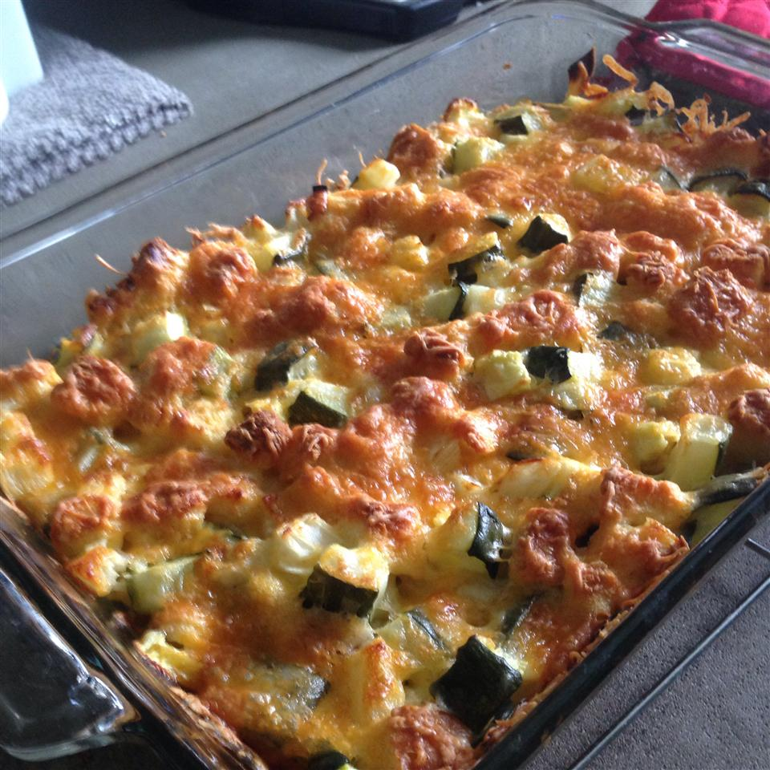

Cheesy Zucchini Casserole

This is a good, cheesy, vegetable side dish ...very easy to prepare.
A tasty cheesy side dish with zucchini, egg, onions and bread
- 4 slices bread, cubed
- ¼ cup melted butter
- 2 cups cubed zucchini
- 1 large onion, chopped
- 1 teaspoon garlic salt
- 1 egg, beaten
- 2 cups shredded Cheddar cheese
- Preheat oven to 350 degrees F (175 degrees C).
- Place bread cubes in a medium bowl and pour melted butter over the bread.
Add the zucchini, onion, garlic salt and egg; mix well.
Transfer the mixture into a 9x13 inch baking dish and top with the cheese.
- Bake, covered, in preheated oven for 30 minutes. Then uncover the dish and bake for another 30 minutes.
BACK